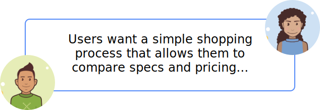

DellGaming
A subsite of Dells Gaming Products that provides users interested in gaming a space to compare gaming products, prices, and specs to help them efficiently navigate through their options.
TIMELINE:
December 2020 - January 2021
MY ROLE:
UXR
UX
UI
Frontend Development
TEAM
Emma Jaud, Angel Newball, Dalia Bolton, Howard Yung, Annie Szarmach
MY MAIN TASKS
Frontend Development
Data Synthesis
User Interviews
Information Architecture
DESIGN & RESEARCH TOOLS
Figma, Miro, Google Drive, Zoom, Adobe Xd, Visual Studio Code, GitHub
THE PROBLEM
Users struggle with finding gaming products on the Dell website and are often overwhelmed and frustrated with the current websites purchase flow. How might we help users efficiently select, customize a product with a quick checkout processes?
OUR SOLUTION
Our team worked together to analyze and create DellGaming, a subsite that immerses users into the world of gaming while showcasing Dell products in an approachable way and creates a more all-inclusive e-commerce shopping experience for their gaming audience.
Click on device to view prototype
User Research
Why a gaming subsite?
The video game industry brings in more revenue than the global movie and North American sports industries combined.

Once lockdown measures were put in place Global Gaming Sales rose about 20% — reaching at $175 billion in 2020 and by 2023 its expected to exceed to $217 billion.
We felt that a subsite focusing solely on Dell’s gaming products would not only benefit their company but also create a more all-inclusive e-commerce shopping experience for their gaming audience.
Research Objectives
Once we determined which direction we wanted to head into we discussed some research objectives.

A few of the KPIs we wanted to focus on during testing were…

With those in mind we moved into analyzing the current Dell website.
Heuristic Analysis
We analyzed the Dell website to determine what worked and what did not so we could improve aesthetics and accessibility. For this we conducted a heuristic and accessibility evaluation.
Survey Data
I conducted a survey to help gauge the user behavior of Gamers and their game shopping habits.

User Interview Insights
I interviewed 3 users who were all heavily involved in gaming and determined that our users care most about having a simple shopping and checkout process that also allows them to compare specs and pricing.

After interviewing and analyzing the survey data, we used our findings to create an empathy map in order to define and gain a better understand of our user.
Empathy Map
As a team, we synthesized our findings from our interviews and survey responses into an empathy map to capture and gain a deeper insight into our users.

Competitor Analysis Overview
We conducted a SWOT analysis on a few of Dells direct and indirect competitors to get a deeper understanding of the competition as well as identify growth opportunities for DellGaming.
We analyzed Sony, Amazon, IBM, and Apple. Below is the SWOT we created for Apple.
Definition & Ideation
Value Propostion

Feature Prioritization Matrix
After discussing and analyzing our user research, we organized and streamlined our findings into a Feature Priority Matrix.

Top Feature Must Haves:
- Product Reviews, Search Bar, Product Comparison, Build a Bundle Feature
User journey
Our team created a user journey map to help illustrate the feelings a potential user may experience throughout their time on DellGaming.

Information Architecture
Card Sorting
As expressed by users, the current dell website is confusing, especially when looking for gaming products.
We began the process of card sorting to better understand how to structure the website in a user friendly way and that made the most sense for the gaming microsite.
Site Map
We then used our categorizations from the card sorting to create a new site map.
Top Feature Must Haves:
- Simplified website.
- A focus on game related products and content.
- Less pages for faster development.
- Easy maintenance which will make the microsite cost efficient.
Low fidelity wireframes
Lofi Desktop Wireframes
Based on features and information architecture, we came up with a simple layout with the goal of easy navigation, highlighting gaming products, not over-crowding the page with specs, and a quick checkout process.

Lofi Mobile Wireframes
We did the same for the mobile site which mirrors the lofi desktop wireframe. In the mobile we created a clean look focusing on gaming specifically with the same features added to the desktop version.

Lofi Usability Testing
Objective:
As UI designers, we need to make sure that users are able to navigate through the website to find information successfully, so we designed four tasks to test.
Tasks:
- Create an account.
- Finding items and adding to a “compare” list.
- Building own PC Gaming System.
- Adding items to cart and checking out.
After discussing and analyzing the results from our 5 usability tests, we organized and streamlined our users’ thoughts into a Usability Testing Priority Matrix.
Main Takeaways:
- Users want items recommended to them.
- Had a hard time navigating home.
- Navbar was confusing- between “products” and “shop.”
Prototyping
Style Guide
UI STYLE DIRECTION:
We first researched the main style guide for Dell as a company to create a cohesive style guide that capitalizes on Dells established style but also brings in new elements of the gaming feel.
We finalized details for typography, button states, icons, and more. These guidelines were applied to the desktop and mobile prototypes.

Midfi Desktop Wireframes
Once the style guide was established we created mid fidelity wireframes.
In our mid-fidelity prototype, we resolved the user’s pain points from the lo-fi testing, aiming to make experience more intuitive. Below are a few frames from the mid-fi prototype.

Midfi Mobile Wireframes
Along with the style guide being applied, mobile prototype was created as well to create a responsive design.

Midfi Usability Testing
In this iteration of testing, we tested the same 4 flows as the previous testing and found that the only task with 100% success was creating an account.
Unfortunately, there were some glitches with Figma that interfered with this testing round, like interactions not working even though they were prototyped correctly.
We took that into consideration and had users tell us what they would do and how they would choose to navigate if the prototype was fully functioning.
Main Takeaways:
- Users had a hard time finding the “build your own pc system” tab and also found the naming of that feature confusing - users weren’t sure if they were customizing a laptop or assembling a group of items.
- User would like to be able to review order before completing order.
- Users thought the site overall could be cleaner layout wise.
Coding
Figma to Code
Based on our finding from testing, we determined what iterations we needed to make from our Figma prototype to what we wanted to apply to our coded version.
We divided up the work so that each team member coded three pages. Once all pages were finished, they were given to me to finalize code and make everything consistent through out DellGaming.


Usability Testing of Coded Dellgaming Website
After discussing and analyzing the results from our 5 usability tests, we organized and streamlined our users’ thoughts into a Usability Testing Priority Matrix.
Top Iterations to Make:
- Make items smaller in Cart/Review Cart.
- Users would like to see a sign in validation.
- User would like to see a cart number validation (how many items in cart).
- More prominent compare button next to items.
- Get rid of payment information at the beginning of the Sign In Process.
With the feedback from our users we updated our code with the necessary iterations.
Final Thoughts
Our site is a more streamlined version of a Dell’s gaming product site - keeping their branding and functionality but adding those gaming site components. We drew inspiration from sites like Playstation & EA.
With the feedback from our users we were able to build something that is easy for users to navigate and gave the site more gaming character than the original Dell gaming section.
WHAT’S NEXT
Whats are the next steps, we will continue to test and iterate the current design to improve interactions and experience for the users, Add more complex animations, resize some items
Implement backend coding
-
primarily focusing on
- Using a database to display all dell gaming products
- Keep track of the items added to cart and display that number in real time throughout site
- Sign-in Authentication API to make sign in easier
- Give the option for user to save contact, shipping, and billing information for future purchases
Take a look at Dellgaming
Click on devices to see full website or scroll down to see video of website!
Click on device to view prototype